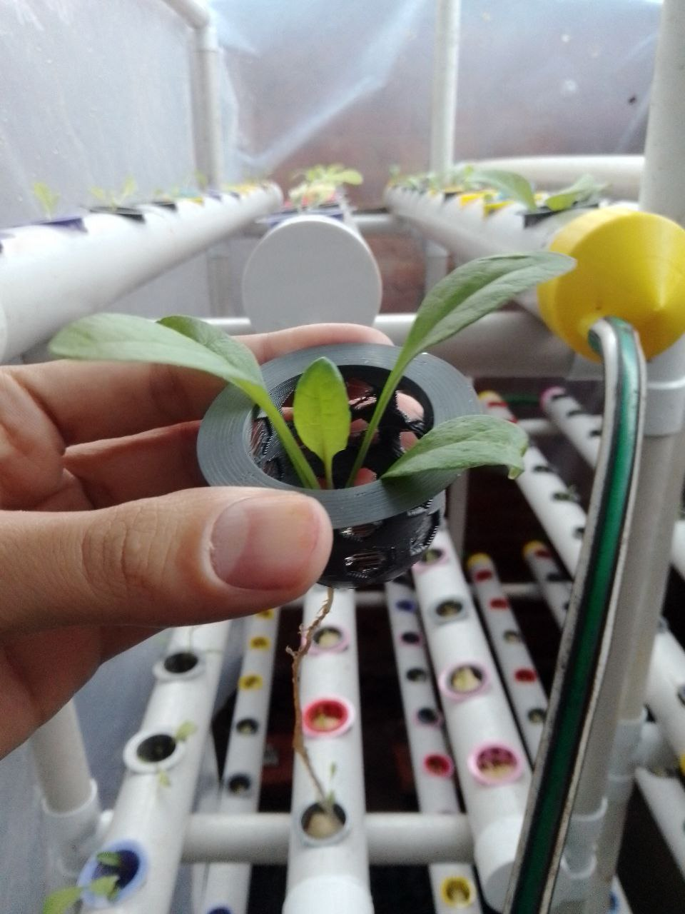
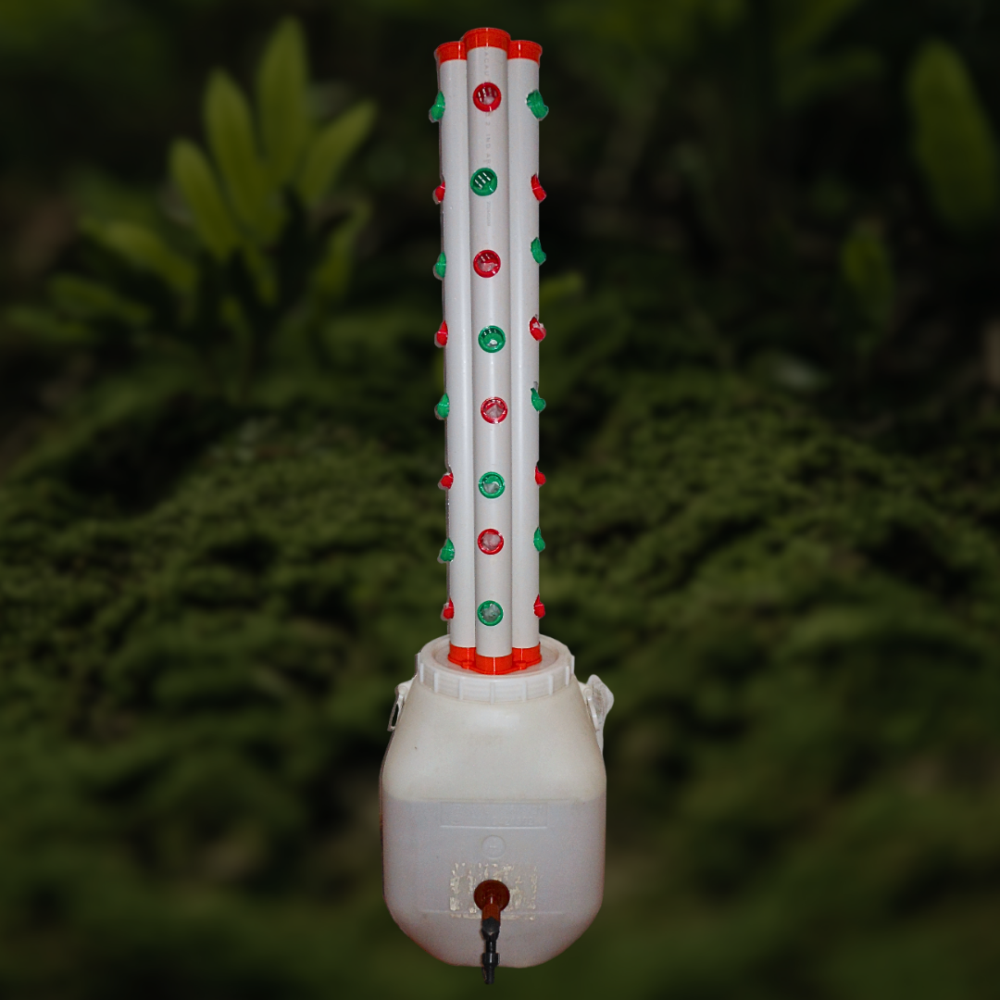

Cultivo Ecológico en tu Hogar
En JyJ, creemos en la importancia de cultivar de manera ecológica y sostenible. La hidroponía ofrece una solución innovadora para el cultivo de alimentos en casa, reduciendo el impacto ambiental y proporcionando beneficios significativos.
Beneficios de la Hidroponía
Ahorro de aguaLa hidroponía utiliza hasta un 90% menos de agua que la agricultura tradicional en suelo. |
Cultivo en espacios reducidosLa hidroponía permite cultivar en interiores, balcones y otros espacios pequeños. |
Mayor control sobre el entorno de cultivoCon la hidroponía, puedes controlar la luz, temperatura y nutrientes para optimizar el crecimiento de las plantas. |
Cultivo libre de pesticidasLa hidroponía reduce la necesidad de pesticidas y productos químicos, lo que resulta en alimentos más saludables. |
Producción de alimentos frescos en casaCon la hidroponía, puedes cultivar tus propias verduras frescas en casa durante todo el año. |
Mayor rendimiento y crecimiento más rápidoLa hidroponía suele resultar en un crecimiento más rápido y mayores rendimientos en comparación con la agricultura tradicional. |
Sobre Nosotros
En JyJ, contamos con un equipo liderado por un Ingeniero Agrónomo graduado de la Universidad Nacional del Nordeste (UNNE), con una sólida formación académica en ciencias agrarias y trayectoria en investigación científica. Además, hemos desarrollado aplicaciones móviles enfocadas en soluciones químicas y agrícolas para facilitar el trabajo en el campo. Nuestra pasión por la agricultura sostenible se refleja en nuestro compromiso con la enseñanza, participando en docencia en la UNNE y contribuyendo en la ciencia tanto con publicaciones en revistas científicas como revisiones de manuscritos para revistas internacionales de alto impacto. Combinamos conocimiento científico con práctica empresarial para ofrecer soluciones innovadoras y sostenibles en el campo de la hidroponía y la agricultura urbana.
Misión
"Proveer soluciones de cultivo hidroponico accesibles, innovadoras y sostenibles para hogares, permitiendo a las personas cultivar sus propios alimentos frescos y saludables de manera eficiente y ecológica."
Visión
"Ser una empresa referente en el mercado de hidroponía para el hogar, reconocida por nuestra contribución a la sostenibilidad ambiental, aportando soluciones a nuestros clientes, y por nuestra capacidad de innovación constante en productos y servicios, permitiendo que cada hogar pueda cultivar sus propios alimentos."
Nuestros Servicios
Asesoramiento Personalizado
Nuestro equipo de expertos en hidroponía está dedicado a proporcionarte el asesoramiento más completo y personalizado posible. Desde ayudarte a elegir el sistema de cultivo adecuado para tu espacio hasta brindarte consejos sobre el cuidado de tus plantas, estamos aquí para guiarte en cada paso del camino.
Entendemos que cada hogar y cada jardinero tiene necesidades únicas, por lo que nos tomamos el tiempo necesario para escuchar tus objetivos y responder a todas tus preguntas. Ya sea que estés comenzando en el mundo de la hidroponía o que desees mejorar tus habilidades, estamos aquí para ayudarte a tener éxito en tu aventura de cultivo en casa.
 
Venta de Insumos
Ofrecemos sistemas para hidroponía NFT y verticales, con diseñados propios e impresos en 3D con PLA biodegradable.
El uso del PLA en la fabricación de nuestros productos ofrece numerosas ventajas ambientales. El PLA es un bioplástico derivado de recursos naturales renovables, como el almidón de maíz o la caña de azúcar, lo que lo hace biodegradable y sostenible. Al elegir nuestros productos, estás contribuyendo a reducir la contaminación plástica y a promover prácticas más responsables con el medio ambiente.
Además, son fáciles de ensamblar y permiten regular de manera sencilla el sistema, adaptándolo a su necesidad de cultivo.

Preguntas Frecuentes
¿Qué es la hidroponía y cómo funciona?
La hidroponía es un método de cultivo de plantas sin necesidad de suelo, donde las raíces se sumergen en una solución nutritiva. Funciona mediante la entrega directa de nutrientes esenciales a las plantas, lo que les permite crecer de manera más eficiente y saludable.
¿Cuáles son las ventajas de la hidroponía en comparación con la agricultura tradicional?
La hidroponía ofrece varias ventajas, como un mayor control sobre el entorno de crecimiento de las plantas, un uso más eficiente del agua y los nutrientes, un crecimiento más rápido de las plantas y la posibilidad de cultivar en espacios reducidos o interiores.
¿Qué tipo de plantas puedo cultivar usando hidroponía?
Prácticamente cualquier planta puede cultivarse mediante hidroponía, incluyendo hierbas, vegetales de hoja verde, tomates, fresas y flores ornamentales. Sin embargo, algunas plantas pueden requerir sistemas hidropónicos específicos para su cultivo.
¿Es difícil mantener un sistema hidropónico en casa?
No necesariamente. Con la orientación adecuada y el equipo adecuado, mantener un sistema hidropónico en casa puede ser bastante sencillo. Muchos sistemas están diseñados para ser fáciles de usar y requieren un mantenimiento mínimo una vez establecidos.
¿Qué tipo de asesoramiento ofrecen?
Ofrecemos asesoramiento personalizado sobre cómo configurar y mantener un sistema hidropónico en casa, qué plantas cultivar, cómo controlar plagas y enfermedades, y cómo optimizar el rendimiento de tus cultivos.